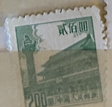
| SOURCE | TITLE| IMAGE MATCH | click to source page |
| eBay | China B04 MNG 1954 1v | eBay | 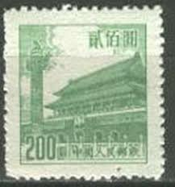 |
| eBay | PR China 1954 Sixth Issue $200 MNG A19P57F487 | eBay | 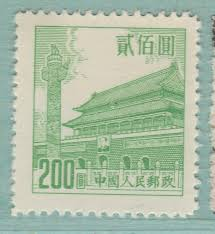 |
| eBay Australia | Cats Chinese Stamps for sale | Shop with Afterpay | eBay Australia | 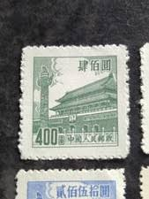 |
| eBay | People's Republic of China Scott #210 Mint No Gum As Issued | eBay | 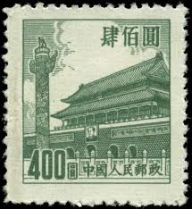 |
| eBay UK | 1 Number Single Chinese Stamps for sale | eBay UK |  |
| eBay | Gray Chinese Stamps for sale | eBay |  |
| eBay | Mint Hinged Individual Chinese Stamps for sale | Shop with Afterpay | eBay Australia | 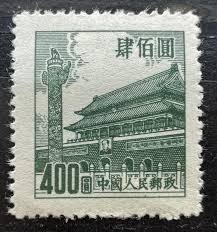 |
| Find Your Stamps Value | Gate of Heavenly Peace - 天安门 $800 Orange stamp price, value | 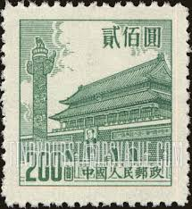 |
| eBay | Las mejores ofertas en Gatos Sellos chinos | eBay | 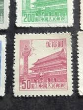 |
| PicClick | CHINA ASIA Stamps Mint Hinged Ng Lot 900Bj $2.25 - PicClick | 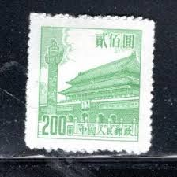 |
| Xabusiness.com | R1 Scott 12-20 Regular Issue with Design of Tian An Men (1st) - China Stamps | 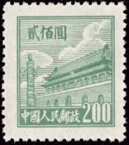 |
| Flickr | China forbidden palace sml (200) | Mark Morgan | Flickr | 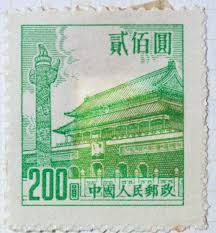 |
| Colnect | Stamp: Gate of Heavenly Peace (China, People's Republic(Gate of Heavenly Peace,Peking (VI)) Mi:CN 232,Sn:CN 208,Yt:CN 1010,Sg:CN 1619 📮 | 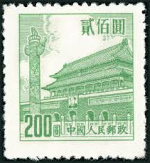 |
| carousell.ph | heaven gate - View all heaven gate ads in Carousell Philippines |  |
| Stamp Auction Network | Kelleher and Rogers Limited Sale - 38 Page 41 | 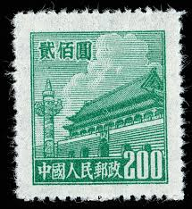 |
| Etsy | Buy Postage Stamps,set of 8 ,gate of Heavenly Peace,pcr,china Online in India - Etsy | 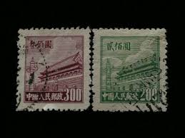 |
| Amazon.com | Amazon.com: China Stamps - 1954, R7, Scott 206-213 Regular Issue with Design of Tian An Men (6th Print), MNH, F-VF: Posters & Prints |  |
| Shutterstock | China City Stamp: Over 554 Royalty-Free Licensable Stock Photos | Shutterstock | 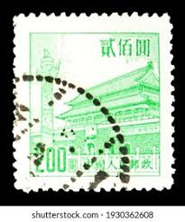 |
| Blogger.com | Forbidden City on Stamp | 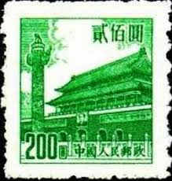 |
| eBay | PR China 1954 Sixth Issue $400 Used A19P57F492 | eBay | 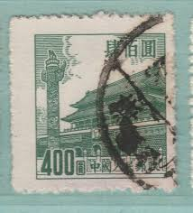 |
| eBay | PR China 1954 Sixth Issue $200 Used A19P57F488 | eBay | 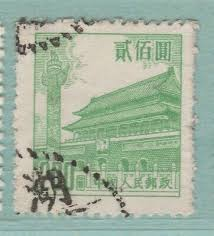 |
| Stamp Community Forum | Need Help About Heaven Gate China Stamps - Stamp Community Forum | 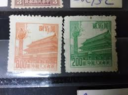 |
| eBay | PR China 1954 Sixth Issue $400 Used A19P57F491 | eBay |  |
| eBay | 1954 PRC CHINA Sc# 206-212🔥MNG🔥GATE OF HEAVENLY PEACE🔥 ARCHITECTURE | eBay |  |
| Todocolección | china 1954 sello (*) - 9/48 - Buy Antique stamps of China on todocoleccion |  |
| HipStamp | China 1600$ (TS-1352) | Asia - China, Stamp / HipStamp | 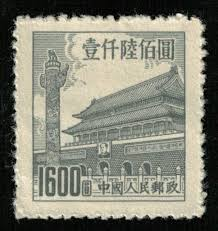 |
| Find Your Stamps Value | PORT ARTHUR AND DAIREN: Gate of Heavenly Peace - 亚瑟港和大连：天安门50y Deep purple stamp price, value | 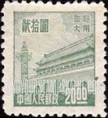 |
| Cherrystone Auctions | AUCTION SALE | 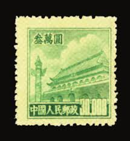 |
| Freestampcatalogue.com | Stamp 1954, China People's Republic Definitives 8v, 1954 - Collecting Stamps - Freestampcatalogue.com - The free online stampcatalogue with over 500.000 stamps listed. |  |
| eBay UK | PRC China Stamp 1951 Sct#97 Tian An Men Definitive ￥30,000 yuan 1PC MNH | eBay UK | 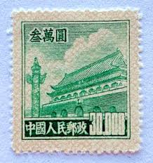 |
| Find Your Stamps Value | Value of 厦门外围包夜（约炮上门）联系方式维心安排加88236881联系方式维心-城市周边都可安排顶级女孩20250508JEHWKJHFKJNCXVNKNV.iqf stamps |  |
| Stamp Community Forum | Reverse Print On Reverse! - Stamp Community Forum | 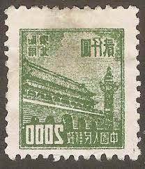 |
| Shutterstock | 3+ Thousand Beijing Stamp Royalty-Free Images, Stock Photos & Pictures | Shutterstock | 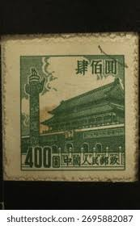 |
| bwdavis.us | WW China, Peoples Rep. of - Collectibles of Bwdavis |  |
| eBay | Mint No Gum/MNG Chinese Stamps for sale | eBay | 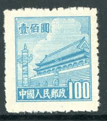 |
| lastdodo.com | Stamps from China - People's Republic Stamp catalogue - LastDodo | 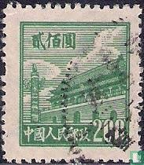 |
| HipStamp | China 400$ (TS-1309) | Asia - China, Stamp / HipStamp | 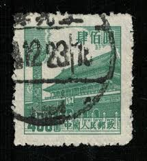 |
| Delcampe | Northern China 1949-50 - China North People's Post 1949 $200 Fine Used SGNC351 | 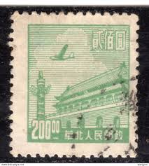 |
| China 1965 Tiananmen Gate Stamp |  | |
| PicClick | CHINA - "GATE Of Heavenly Peace" - Lot Of 9 Old Stamps - Unused!! $1.99 - PicClick | 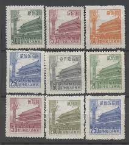 |
| eBay | PR China 1954 Sixth Issue $800 MNG A19P57F496 | eBay |  |
| eBay | Taiwan China ROC SC 211,213 NGAI (6fge) | eBay |  |
| eBay | 1954 CHINA SC#210 MNH NG VF🔥 GATE OF HEAVENLY PEACE🔥 | eBay |  |
| eBay UK | 3 Stamps Width Mint Never Hinged/MNH Chinese Stamps for sale | eBay UK | 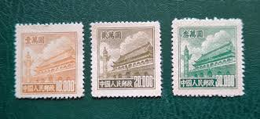 |
| eBay | 1950 PRC China Sc#88 USED VF | eBay | 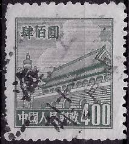 |
| eBay | China 1954, Tiananmen - Gate of Heavenly Peace, Bejing, MNG Stamp | eBay |  |
| eBay | China (PR) #206-13 used | eBay |  |
| Alamy | CHINA - CIRCA 1950: stamp printed by China, shows Dove of peace by Pablo Picasso, circa 1950 Stock Photo - Alamy | 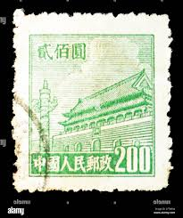 |
| eBay | China Gate | eBay |  |
| eBay | PRC China Stamps: 1950 $200 Fourth Issue SC 86 Used | eBay | 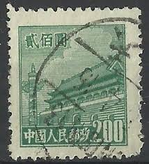 |
| China stamps - 1950 (Tiananmen) | 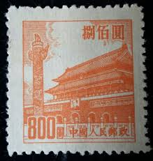 | |
| eBay UK | Mint Never Hinged/MNH Single Chinese Stamps for sale | eBay UK | 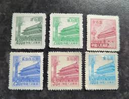 |
| Stamp Community Forum | China: Gate Of Heavenly Peace. - Stamp Community Forum | 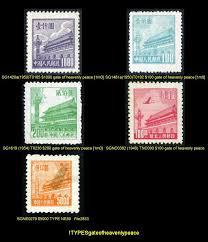 |
| chinesestamp.org | R10/PU10/普10, Regular Issue with Flower Design《花卉普通邮票》 - Chinese Postage Stamps | China Postage Stamps | Chinese Stamp Album | China Philatel | ACPF | Stamps Catalogue of PRC | 中国邮票目录| 中国邮票 | 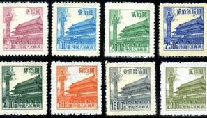 |
| Find Your Stamps Value | NORTHEAST CHINA: Gate of Heavenly Peace - 中国东北: 东北贴用: 天安门$2000 Gray green stamp price, value |  |
| ebid.net | China 1954 Gate of Heavenly Peace 1600 Used Stamp on eBid United States | 213883002 | 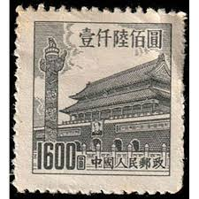 |
| PicClick | 1900'S (1946 PROBABLY) china IMPERIAL stamps .... rare $600.00 - PicClick | 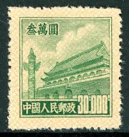 |
| China stamp | R4 Scott 85-94 Regular Essur with Design of Tian An Men (4th Print) - China Stamps | 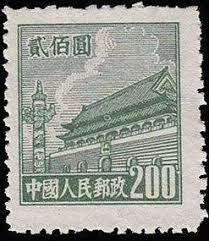 |
| eBay | China 1954 Scott #206-213 Gate of Heavenly Peace Peking Mint NH/Used | eBay |  |
| eBay | PRC China 209 MH | eBay |  |